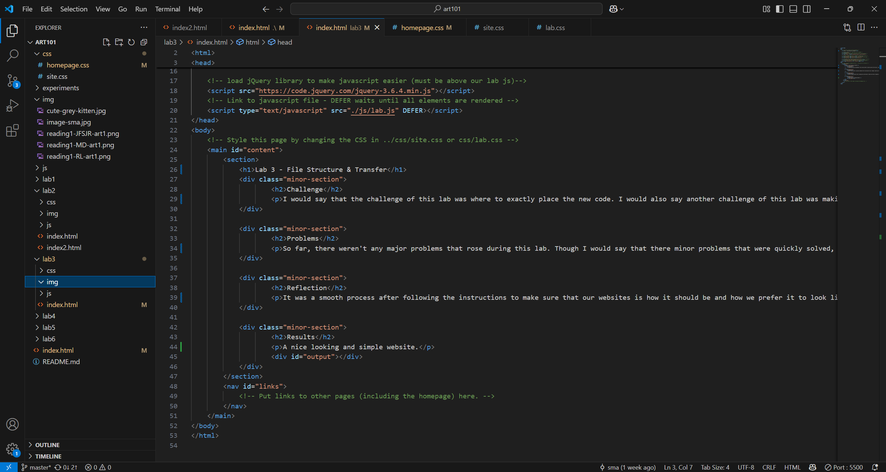
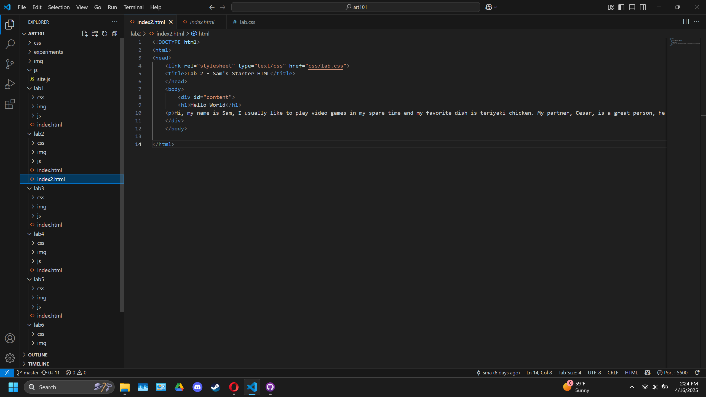
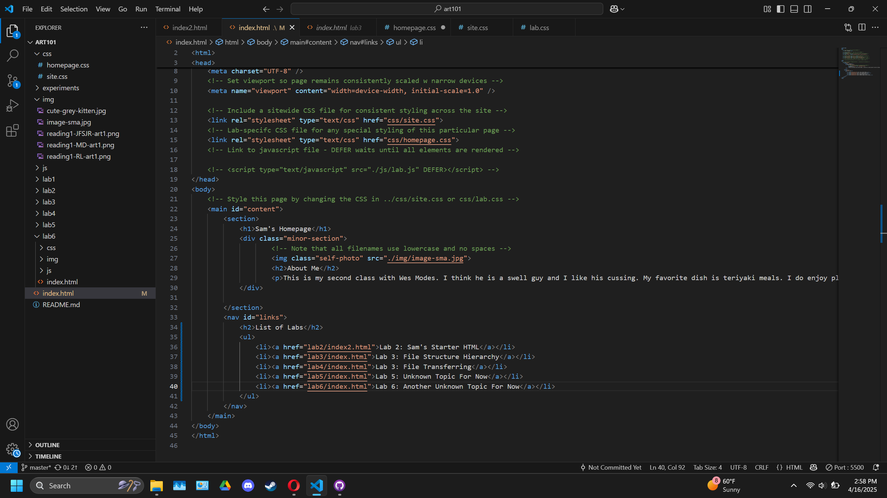
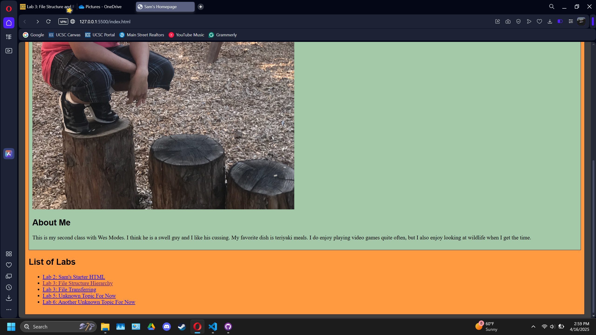
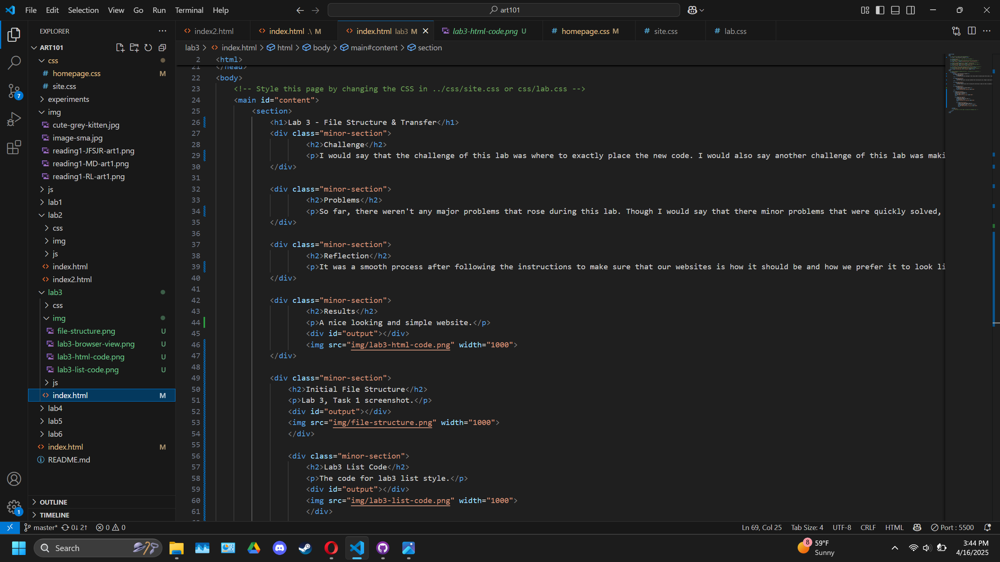
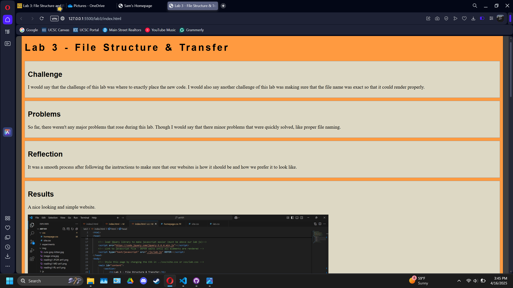

Lab 3 - File Structure & Transfer
Challenge
I would say that the challenge of this lab was where to exactly place the new code. I would also say another challenge of this lab was making sure that the file name was exact so that it could render properly.
Problems
So far, there weren't any major problems that rose during this lab. Though I would say that there minor problems that were quickly solved, like proper file naming.
Reflection
It was a smooth process after following the instructions to make sure that our websites is how it should be and how we prefer it to look like.
Results
A nice looking and simple website.
Lab 3 Initial File Structure
Task 1 screenshot.
Lab3 List Code
Task 2, for code for lab3 list style.
Lab 3 List Code Browser view
Task 2, for how the browser looks with the list code
Lab 3 Overview Code
Task 3, for the source code of the Lab 3 overview.
Lab 3 Overview Browser View
Task 3, for how the browser looks with the updated code.
